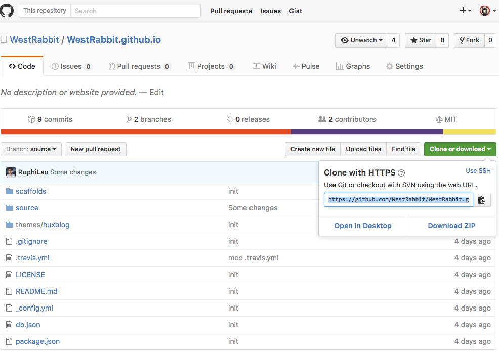

A post a day, keep bugs away.
环境
我是用的Mac，windows下路径的写法不同，请注意。我以本教程post为例。
git clone
在terminal下进入自己喜欢的目录下，使用
git clone https://github.com/WestRabbit/WestRabbit.github.io.git
那一长串是在下图拿到的

或者用ssh…会比较方便..不用输密码..至于用法..自己百度一下…懒得讲…
文章编写
文章存放在 source/_posts 这个目录下
格式参照已有的文章
命名格式也是
不懂的地方问铷斐或者我（旭升）或者剩下的那几个谁…
文章的tag:13级、14级、15级、Web、iOS、Java、图像处理、教程、工具、杂
如果你们在这里没有找到合适的tag，先问一下那几个谁，然后再加…
文章上传
git add
当你在本地完成了编写之后。对每个你新建or修改过的文件or文件夹进行add，例如：
git add ./source/_post/2014-09-24-how-to-post.markdown
git add ./source/_post/2014-09-24-how-to-post
git commit
在WestRabbit.github.io下
git commit
git push origin source
我们所用的分支叫做source。所以push到这里，同理在WestRabbit.github.io文件夹下
git push origin source
可选（ 不过还是建议大家装一下 ）
Hexo的安装和预览
装Node
切换淘宝源
npm i nrm -g --registry=https://registry.npm.taobao.orgnrm use taobao安装
npm i hexo-cli -g在clone下来的目录底下
npm i生成
hexo g预览
hexo s